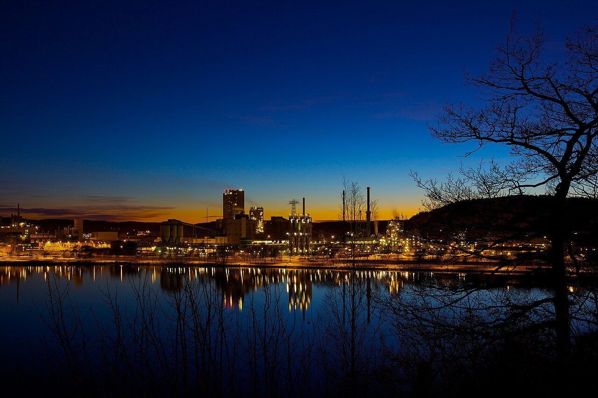
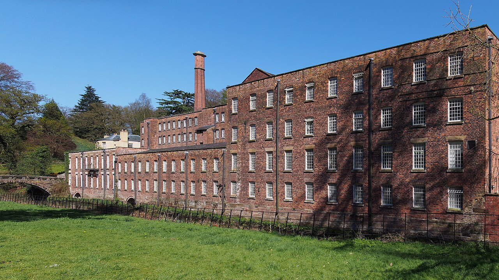
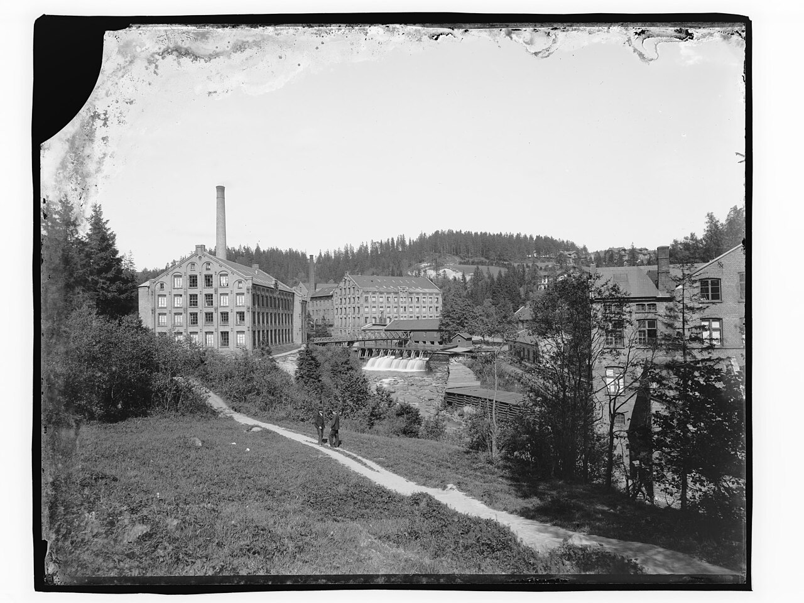
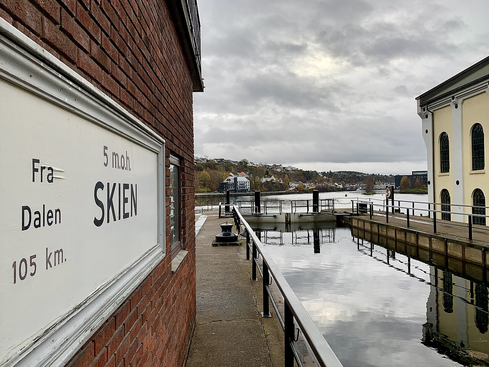
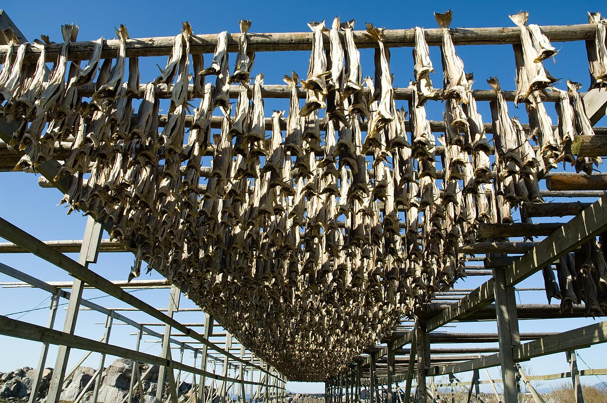
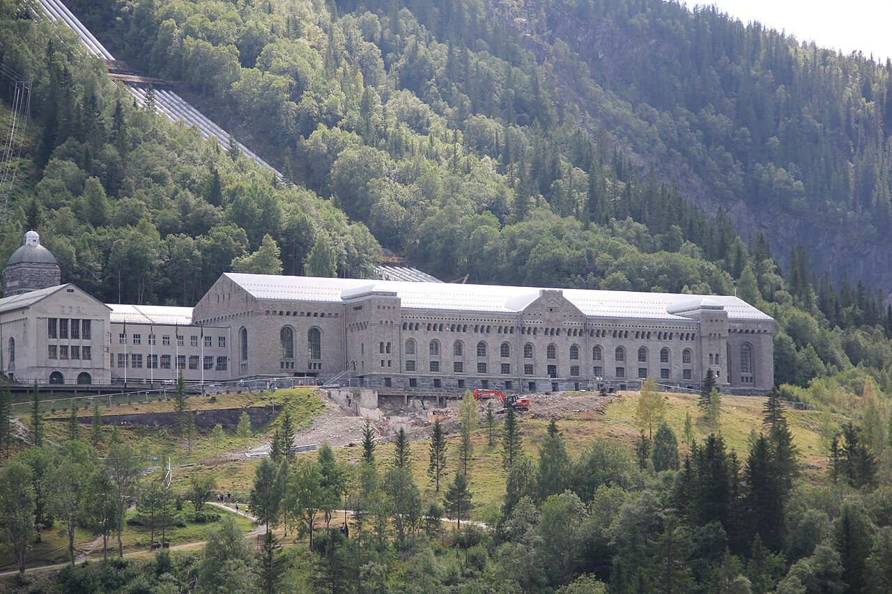
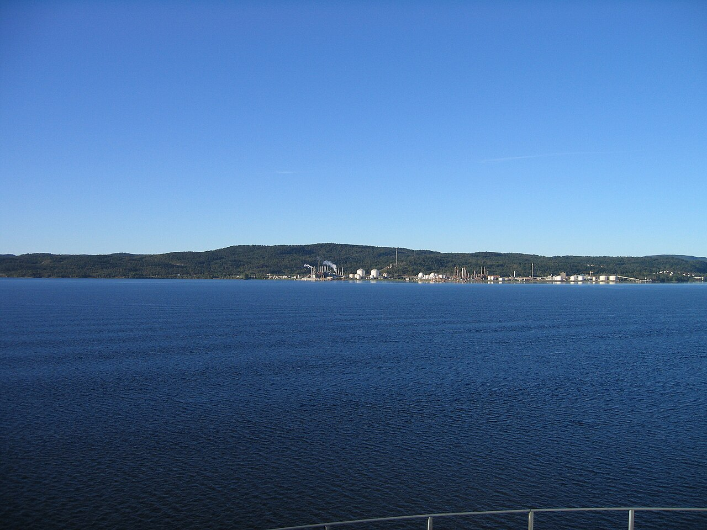

Hvorfor er vi rike i Norge?
Norge regnes i dag som et av verdens rikeste land. Men skyldes det oljen, fisken eller vannkraften? For å forstå velstanden i dag må vi helt tilbake til industrialiseringen i Storbritannia – og til elvene og fabrikkene i Grenland og Telemark.

Utviklingen fra et enkelt jordbrukssamfunn til et velstående industrisamfunn handler om hvordan kombineres med teknologi, kunnskap og politikk. For elever ved Hjalmar Johansen videregående skole i Skien ligger sporene etter denne historien bokstavelig talt rett utenfor skoledøra – fra Laugstol Brug i Skien sentrum til Herøya i Porsgrunn og Rafnes i Bamble.
Du skal lære om
- •hva som kjennetegner et rikt land og begrepet arbeidsproduktivitet
- •hvordan industrialiseringen startet i Storbritannia og spredte seg
- •hvordan norsk økonomi og industri utviklet seg fra 1800-tallet til i dag
- •hvordan vannkraft og industri formet Skien, Porsgrunn, Bamble og Telemark
Tenk over
- 1.Hva mener du gjør et land rikt – høye inntekter, trygge jobber eller tilgang på velferd?
- 2.Hvorfor tror du at Norge var et rikt land allerede før vi fant olje i Nordsjøen?
Hva er et rikt land?
Kort fortalt
At et land er rikt, kan ikke bare forklares med naturressurser. – hvor store verdier man klarer å skape per person og per time – er avgjørende. Land med industriteknologi skaper langt større verdier enn land som er avhengige av håndverksproduksjon.
Ligger svaret i naturressursene?
Når vi skal forklare hvorfor Norge er rikt, nevner mange olje, gass og fisk – som i dag er Norges viktigste eksportvarer (se kapittel 3.1 om naturressurser →). Men dersom vi definerer et rikt land som et samfunn der nesten alle har nok mat, varme klær, bolig med innlagt vann og kloakk, helsestell og mulighet til å dra på ferie, kunne Norge beskrives som et rikt land allerede på 1960-tallet – før den første oljekrona kom inn på statsbudsjettet i 1975.
Det viser at det ikke er naturressurser i seg selv som skaper velstand, men hvordan de kombineres med – altså kunnskap, utdanning og arbeidsevne. Flere av verdens fattigste land, som Den demokratiske republikken Kongo, har enorme mineralressurser (blant annet kobolt til batterier), men lever likevel under svært krevende levekår.
FN · Human Development Index (HDI)
2. plass i verden
FNs måler forventet levealder, utdanningsnivå og inntekt per innbygger. Norge ligger helt i verdenstoppen sammen med Island og Sveits.
SSB · Verdiskaping
> 50 % over EU-snittet
Statistisk sentralbyrå viser at Norges BNP per innbygger ligger langt over snittet i EU, drevet av både høy produktivitet i fastlandsøkonomien og olje- og gassproduksjon.
Industrialisering og arbeidsproduktivitet
Forskjellen på rike og fattige land handler ikke om hvor hardt folk jobber. En arbeider som syr fotballer for hånd eller plukker teblader i høyt tempo, jobber svært hardt – men med enkle redskaper skapes små verdier per time. Med og maskiner drevet av mekanisk energi () kan de samme menneskene på samme antall arbeidstimer produsere mangedobbelt mer enn i .
Rike, industrialiserte land kalles ofte , mens land med lavere industrialisering omtales som . Samtidig er disse begrepene omstridte: mange land faller mellom kategoriene (som Kina eller Brasil), og «u-land» kan gi forenklede forestillinger om at alle disse landene er like eller styrt likt.
⚡ Super-sammendrag · Hva er et rikt land?
Norge var rikt allerede før oljen fordi maskiner og teknologi økte arbeidsproduktiviteten. Naturressurser skaper bare varig velstand når de kombineres med kunnskap, teknologi og menneskelige ressurser.
Det begynte i Storbritannia
Kort fortalt
Storbritannia innførte importforbud mot indiske bomullsstoffer for å beskytte egen tekstilindustri. Handelsmenn importerte i stedet råbomull og utviklet maskiner for å spinne og veve raskere – slik startet den industrielle revolusjonen på 1700-tallet.

På 1600- og 1700-tallet hadde India (under Mogulriket) verdens mest konkurransedyktige bomullsstoffer, produsert med dyktig håndverk. Da britiske handelsmenn importerte disse lette stoffene til Europa, stupte salget for britiske ullprodusenter. Etter protester fra ullnæringen vedtok Parlamentet tidlig på 1700-tallet et forbud mot å importere ferdige bomullsstoffer fra India – et klassisk eksempel på .
Forbudet gjaldt derimot ikke råbomull. Britiske kjøpmenn begynte å importere råbomull og fikk spinnere og vevere i Storbritannia til å lage stoffene selv. Fordi arbeidskraften var dyrere og mindre effektiv på bomull enn i India, lønte det seg å investere i nye oppfinnelser og maskiner (som vanndrevne spinnemaskiner og mekaniske vevstoler). Først solgte fabrikkene bare til det britiske , men mot slutten av 1700-tallet var de britiske maskinvaren så billige at de utkonkurrerte indisk håndverk globalt.
For å beholde forspranget innførte Storbritannia eksportforbud på maskiner. Men i 1798 klarte en ingeniør å smugle ut tekniske tegninger til dagens Belgia, og teknologien spredte seg gradvis videre i Vest-Europa.
⚡ Super-sammendrag · Starten i Storbritannia
Britisk proteksjonisme mot indisk bomull ga grobunn for maskinell tekstilproduksjon hjemme. Smuglede tegninger spredte industriteknologien til Belgia og resten av Vest-Europa.
Vi kopierte britisk teknologi og politikk
Kort fortalt
Geografisk nærhet og tette handelsbånd til Storbritannia gjorde at Norge kom tidlig i gang med industri på 1840-tallet. Norge brukte høy på ferdige varer og lav toll på råvarer for å bygge opp egen industri.

Kort tid etter at Storbritannia opphevet eksportforbudet på maskiner, ble de første fabrikkene etablert i Norge på midten av 1840-tallet. Siden 1600-tallet hadde britene kjøpt store mengder norsk trelast, noe som skapte tette personlige og økonomiske bånd. Da Adam Hiorth grunnla Nydalens Compagnie i 1845, reiste han til Storbritannia, kjøpte maskiner og tok med seg britiske fagfolk (som spinnerimester Hargreaves Jameson) til Norge. I 1895 hadde bedriften 1 000 ansatte og var landets største industriarbeidsplass.
Samtidig kopierte Norge den britiske oppskriften med : høy toll på ferdige britiske tekstiler, og lav toll på råbomull. Det gjorde det lønnsomt å produsere i Norge. Da tollen gradvis ble fjernet etter andre verdenskrig (til fordel for frihandel), ble derimot de fleste norske tekstilfabrikkene utkonkurrert og nedlagt.
Likevel tok bred velstand tid. På slutten av 1800-tallet var industrien fortsatt konsentrert rundt Oslo og elvene på Østlandet, og arbeidernes kår var tøffe – men den teknologiske og organisatoriske kunnskapen la grunnlaget for neste bølge.
Trelast, Klosterfossen og veien mot moderne industri
Grenland var tidlig en del av denne britisk-norske handelen. Fra 1600- og 1700-tallet ble enorme mengder tømmer fløtet ned Telemarksvassdraget til sagbrukene ved Klosterfossen og Skien og skipet ut til Storbritannia og Nederland. På 1870-tallet ble trelasten videreforedlet til tremasse og papir ved blant annet Laugstol Brug (1873) og senere Union Co. på Klosterøya – bare noen minutters gange fra der Hjalmar Johansen videregående skole ligger i dag.

⚡ Super-sammendrag · Tidlig norsk industri
Norge kopierte både maskiner og tollbeskyttelse fra Storbritannia på 1840-tallet. Trelasthandel langs kysten og i Telemark gjorde overgangen raskere og bygget viktig industrikompetanse.
Naturressursenes betydning for eksport
Kort fortalt
Rundt 1960 produserte Norge de fleste hverdagsvarene selv bak høye tollmurer, men utover 1900-tallet ble basert på norske naturressurser avgjørende – fra tørrfisk og Stavanger-sardiner til moderne lakseoppdrett.

Eksport basert på naturressurser har røtter lenge før den industrielle revolusjonen. På 1300-tallet utgjorde tørket torsk () rundt 80 % av Norges eksport. Senere ble sild konservert ved salting og røyking en stor eksportvare. Da silda forsvant fra norskekysten i andre halvdel av 1800-tallet, gikk fiskerne over til småfisken brisling.
Ved å kombinere en fersk naturressurs med ny europeisk konserveringsteknologi (hermetikkbokser og maskinell pakking rundt år 1900) ble «norske sardiner» en global suksess. Stavanger vokste på få tiår til Norges fjerde største by, med over 4 000 sysselsatte i 44 hermetikkfabrikker i 1912.
Da kjøleskap og frysere ble vanlig etter krigen, sank etterspørselen etter hermetikk, og hermetikkindustrien forsvant. I stedet vokste moderne fileterings- og fryseanlegg fram – samt lakseoppdrett fra 1980-tallet, som i dag står for rundt to tredeler av Norges sjømateksport (les mer om havbruk og villfisk i kapittel 3.1 →).
⚡ Super-sammendrag · Eksportindustri
Norsk eksport har hele tiden tilpasset seg ny teknologi og nye markeder: fra tørrfisk og trelast til hermetisk brisling i Stavanger og høyteknologisk lakseoppdrett i dag.
Vannkraft, aluminium og Telemarks-industrien
Kort fortalt
Nedbørrike fjell, bratte fossefall og dyktige ingeniører gjorde Norge til en pioner innen vannkraft på 1880-tallet. Tilgangen på billig, ren elektrisitet la grunnlaget for kunstgjødsel og aluminium – og skapte store i både Telemark og på Vestlandet.

Verdens første vannkraftverk kom i drift i Wisconsin og i Hamn på Senja i 1882. Allerede 1. oktober 1885 startet Laugstol Brug i Skien det som regnes som Norges første kommersielle elektrisitetsverk med strømsalg til private abonnenter og slusedrift i Telemarkskanalen. I 1891 ble Hammerfest verdens første by med elektrisk gatebelysning fra vannkraft.
Det avgjørende spranget kom da ingeniører som hadde studert i Europa, koblet billig fossefallskraft til ny kjemi og metallurgi. I 1905 grunnla Sam Eyde og fysikkprofessor Kristian Birkeland selskapet Norsk Hydro i Telemark (Notodden og Rjukan) for å lage verdens første kunstige nitrogengjødsel av luft og vannkraft.
Hvorfor ble Grenland Norges viktigste industriklynge?
⚡ Skien (1885)
Laugstol Brug ved Bryggevannet/Hjellevannet (nær dagens Hjalmar Johansen vgs) startet Norges første allmenne kraftsalg. Skienselva ga kraft til både papir, tremasse og tidlig industri.
🏭 Porsgrunn · Herøya (1927)
Norsk Hydro flyttet hovedproduksjonen ned til isfri havn ved Frierfjorden. På 1960-tallet jobbet over 6 500 her. I 2004 ble gjødseldelen skilt ut som Yara; i dag huser Herøya rundt 90 bedrifter (bl.a. Yara, Eramet, Vianode).
🛢️ Bamble · Rafnes (1977)
Med olje- og gassfunnene i Nordsjøen vokste petrokjemien fram på vestsiden av Frierfjorden (i dag INEOS Rafnes), knyttet med rørledninger under fjorden til plastproduksjon på Herøya.

Samtidig skaper denne tunge industrien dagens klimadilemma i Grenland: industrien står for rundt 20 % av fastlandsutslippene i Norge og trenger enorme mengder ny fornybar kraft (les Grenland-caset i kapittel 3.1 →), mens nye råvarer også finnes rett i nabokommunen på Fensfeltet i Nome →.
Høyanger, «kabeltrusselen» og mangel på ny fornybar kraft
På Vestlandet ble vannkraften brukt til å smelte (importert fra Brasil) til rent aluminium. I Høyanger gikk ingeniørene Sigurd Kloumann og Emil Collett sammen med lokale politikere i 1915 om å bygge både kraftverk, fabrikk, skole og legebolig. I dag produserer 156 ansatte ved Hydro Høyanger rundt 64 000 tonn primæraluminium i året, og Norge er verdens 8. største produsent.
Målt per innbygger er det bare Island som produserer mer strøm enn Norge (over fire ganger EU-snittet). Likevel utfordres denne fordelen av kabeltrusselen: Tidligere gikk mye strøm tapt over lange avstander, slik at kraften måtte brukes lokalt. Nye sjøkabler til Europa gjør at strømmen kan eksporteres. Det gir høyere inntekter for kraftprodusenter og store offentlige inntekter – siden stat, fylkeskommuner og kommuner stort sett eier kraftselskapene – men samtidig høyere strømpriser og tøffere konkurranse for hjørnesteinsbedrifter i Høyanger og på Herøya.
Samtidig peker industriklyngen Powered by Telemark (over 100 industri- og teknologibedrifter i Telemark, inkludert Yara, INEOS/INOVYN og Heidelberg Materials) på at mangel på ny fornybar kraft og nettkapasitet kanskje er den aller største trusselen i dag. Selv om Telemark produserer rundt 13,5 TWh strøm i året og bruker rundt 6 TWh, er nettet fullt og prisene høye i Sør-Norge (NO2). Med stigende CO₂-avgifter fram mot 2030 må industrien elektrifisere og omstille seg raskt – uten nok rimelig, ny fornybar kraft risikerer man at grønne investeringer stanser opp eller flyttes ut av landet (karbonlekkasje).
I tillegg opplever tradisjonell industri hard konkurranse om den tilgjengelige kraften fra store datasentre. På Gromstul i Skien har Google fått tildelt 240 MW i første byggetrinn (anslått forbruk rundt 1,7 TWh i året), og har på sikt meldt inn et mulig effektbehov på opptil 860 MW – noe som kan tilsvare opptil 7,5 TWh årlig, eller over halvparten av hele Telemarks kraftproduksjon (og mer enn all industri på Herøya samlet, som i dag bruker rundt 1,3 TWh). Dette skaper en intens debatt i Telemark om hvem som skal få bruke den begrensede fornybare kraften og nettkapasiteten: utenlandske teknologigiganter eller tradisjonell eksportindustri med mange lokale arbeidsplasser.
Kraftklemma: Hvem skal få strømmen?
1. Kabler & offentlige inntekter
Eksport gir inntekter til stat og kommuner som eier kraftselskapene, men løfter strømprisen i NO2.
2. Industri & CO₂-avgift
Stigende CO₂-avgifter tvinger fram elektrifisering. Uten ny kraft og nett øker faren for karbonlekkasje.
3. Datasentre i kraftkø
Gromstul kan alene bruke mer enn halvparten av Telemarks strømproduksjon og presse ut tradisjonell industri.
Kilder: Powered by Telemark, Telemark fylkeskommune, Statnett / Lede og Skagerak Kraft. Se også Grenland-caset i kapittel 3.1.
Husk også baksiden av kraftutbyggingen: Når vassdrag ble demmet opp for å skape velstand i sør og nord, kom det ofte i konflikt med urfolks rettigheter og reindrift – som i Alta-aksjonen (kapittel 2) → og senere i Fosen-saken (kapittel 1) →.
⚡ Super-sammendrag · Vannkraft og industri
Fra Laugstol Brug i Skien (1885) til Norsk Hydro på Rjukan/Herøya og aluminiumsverket i Høyanger skapte billig vannkraft høyproduktiv eksportindustri og hjørnesteinsbedrifter. Nye strømkabler til Europa utfordrer denne strømprisfordelen i dag.
Test deg selv & diskusjon
Flervalgsquiz
Test forståelsen av hvorfor Norge ble et rikt land
Diskusjonsoppgaver (Skien, Porsgrunn & Bamble)
- Rikdom før oljen: Hvorfor kan vi si at Norge var et rikt land allerede på 1960-tallet, selv om oljepengene først kom inn på statsbudsjettet i 1975?
- Fra Laugstol Brug til Herøya og Rafnes: Hvordan henger vannkraften i Skien (1885), kunstgjødselen på Herøya (1927) og petrokjemien på Rafnes i Bamble (1977) sammen med hvorfor Grenland har så mange industriarbeidsplasser i dag?
- Kabeltrusselen og grønn omstilling: Bør Norge prioritere billig strøm til hjørnesteinsbedrifter som Yara på Herøya og Hydro i Høyanger, eller tjene penger på å eksportere kraft til Europa via sjøkabler?
Sammendrag & Ordliste
Hovedlinjer i kapittelet
Velstand skapes av høy arbeidsproduktivitet – når mennesker bruker maskiner og teknologi til å skape større verdier per time. Industrialiseringen startet i britisk bomullsindustri på 1700-tallet og spredte seg til Norge på 1840-tallet gjennom nærhet, handel og tollbeskyttelse. Senere ga kombinasjonen av norske naturressurser (fisk, trelast, vannkraft) og ingeniørkunst grunnlaget for eksportindustri og hjørnesteinsbedrifter i hele landet – med Skien, Porsgrunn og Bamble som et av de viktigste eksemplene.
Kilder
- Store norske leksikon (SNL): Artikler om Laugstol Brug, Herøya, Norsk Hydro, Yara, INEOS Rafnes, Nydalens Compagnie og den industrielle revolusjon – snl.no
- NVE (Norges vassdrags- og energidirektorat): Norsk vannkraft- og elektrisitetshistorie – nve.no
- Herøya Industripark & Norsk Industriarbeidermuseum (Vemork): Industrihistorie i Grenland og Telemark – heroya-industripark.no
- Powered by Telemark: Industriklyngens analyser om kraftbehov, nettkapasitet, stigende CO₂-avgifter og grønn omstilling – poweredbytelemark.no
- Statistisk sentralbyrå (SSB): Nasjonalregnskap og BNP per innbygger sammenlignet med EU – ssb.no
- FN-sambandet / UNDP: Human Development Index (HDI) – fn.no
- Bilder (åpen lisens): Wikimedia Commons (Herøya CC BY-SA 2.0, Quarry Bank Mill CC BY-SA 4.0, Nydalens Compagnie / Nasjonalbiblioteket Public Domain, Skien sluse CC BY-SA 4.0, Lofoten tørrfisk CC BY-SA 2.0, Vemork CC BY-SA 4.0, Rafnes CC BY 3.0).